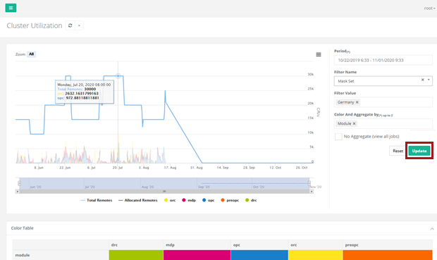
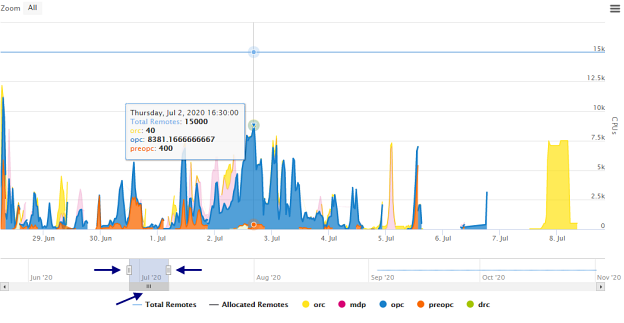
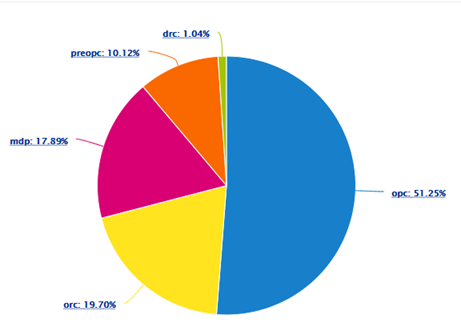
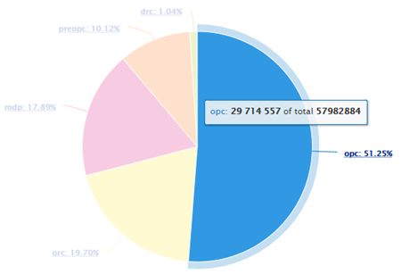
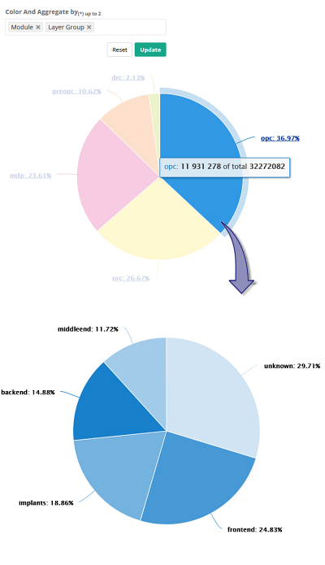

As part of the Calibre Cluster Manager
Plus (CalCM+) advanced features, you can perform data analysis on
your cluster utilization by displaying the statistical data in an
aggregated plot and chart format for a specified period.
Restrictions and Limitations
Procedure
- Open a
browser and enter the server name on which the CalCM daemon is running
and the dashboard server port specified in the CalCM configuration
file (calcmd.conf). For example,
DASHBOARDPORT = 9902
enter in the browser,
http://server_name:9902
- Log into
the CalCM dashboard web application with your authentication information and
verify that you have access to the Data Analysis pages in the Groups
settings. See “Accessing and Updating Settings in the CalCM Dashboard”.
- In the
left‑side menu of the CalCM dashboard, click the Data
Analysis menu item.
- Select
Cluster Utilization to open the page in the CalCM dashboard.
- In the
Cluster Utilization page, click the Period field on the right‑side
of the page to set the date range for the data analysis and click Apply.
Choose the time period that is specific to your cluster
data. A message appears warning that the data may take longer to
load if the period is over one month, but you can choose a very
long period of time of multiple years to plot long-term statistics.
Look at the progress bar to know when the plot is ready.
- Click the
Filter Name field and select Mask Set or
other filter name from the dropdown menu. You can also leave this
field blank, in which case all jobs will show.
- Click the
Filter Value field and select a value for the filter name.
- Click the
Color And Aggregate by field and select Module.
You can optionally select two menu items to color and
aggregate.
- Check No Aggregate (View all Jobs) to view all
jobs. It is recommended to specify a relatively small period range
when selecting No Aggregate to prevent large numbers of jobs to
be displayed.
- Click Update to
create a color‑coded plot of the aggregated data over the specified period.
You can hover over a plot line to display information
for a certain time. Plot detail includes the total number of remotes
and CPUs (in this case, by module). The Color Table below the main
plot window shows the colors used for the aggregated data.
Figure 1. Cluster
Utilization Plot 
- Use the
slider at the bottom of the plot to adjust the x‑axis for specific
dates during the analysis period. The slider can be clicked and
dragged at three points. Dragging either the left or right edge
points of the slider adjusts the range displayed (zoom level). Dragging
the bottom of the slider shifts the display along the time line
while preserving the zoom level.
Figure 2. Cluster
Utilization Plot Detail
- At the
bottom of the Cluster Utilization page, the Top Ten Remote Usage
information displays as a percentage value in the pie chart.
Figure 3. Cluster
Utilization Top Ten Remote Usage
You can hover over a color sector of the pie chart
to display the total remote usage for the aggregated data.
Figure 4. Cluster
Utilization Top Ten Remote Usage Detail
- When two
aggregate factors are used, you can click in the pie chart to see
the distribution over the second criteria.
Figure 5. Viewing
Second Criteria Distribution With Two Aggregates
Results
You have performed data analysis on the cluster utilization for
your job by filtering and plotting aggregate values using CalCM+
advanced features in the CalCM dashboard.